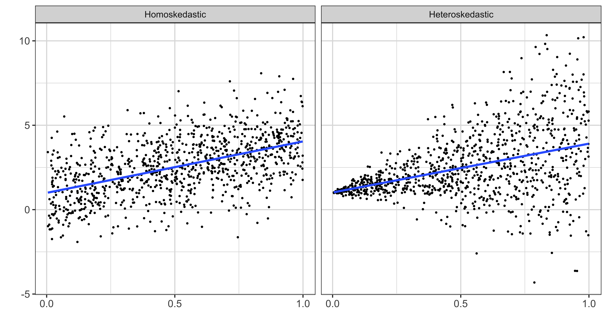

Two definitions, and the whole lecture turns on the difference between them. Homoskedasticity says the variance of the error, conditional on x, is a constant: the same number wherever you look. Heteroskedasticity says it is a function of x, so the spread of the errors changes as x changes. Read the three bullets underneath, because they tell you where this fits. This is MLR five, the assumption every standard error in lecture 05 rested on, and it also came free with the normality assumption there. Today we ask what breaks when it fails.
Homoskedasticity
Var(u|x) = \sigma^2
Heteroskedasticity
Var(u|x) = f(x)
Read the difference: under homoskedasticity the spread of the error is the same number whatever x is. Under heteroskedasticity it is a function of x.
Two panels of simulated data, both from the same true line. On the left, homoskedastic errors: the cloud of points has the same vertical thickness at every value of x. On the right, heteroskedastic: it fans out, narrow on the left and wide on the right. Both fitted lines run through the middle of their clouds, and that is the first thing to notice. Heteroskedasticity does not tilt the line. What it changes is how confident you should be about where the line sits, and that is a statement about standard errors, not coefficients.

Two questions, and it matters that we ask them separately, because they get different answers. Does heteroskedasticity break your coefficient estimates? Does it break your estimate of how uncertain those coefficients are? People often lump these together and assume that if an assumption fails, everything downstream is ruined. That is not what happens here. Keep the two apart in your head as we go, because the practical advice at the end of the lecture depends entirely on one of them being fine and the other not.
What are the consequences of assuming the error is homoskedastic when it is heteroskedastic in reality?
Take the first question on its own. Are the OLS estimators of the coefficients unbiased when the error is heteroskedastic? Think back to lecture 01-3, where we actually proved unbiasedness, and ask which assumptions that proof used. Go through them: the model is linear in parameters, the sample is random, there is variation in x, and the expected value of u given x is zero. Was homoskedasticity anywhere in that argument? Answer before you click, because the answer is the reason this lecture is a repair job rather than a demolition.
Are OLS estimators unbiased when error is heteroskedastic?
Yes, still unbiased, and read the reason: the proof never used homoskedasticity. MLR five came in later, only when we wanted a formula for the variance. So heteroskedasticity leaves your coefficient estimates exactly where they were. That is genuinely good news, and it shapes everything that follows. Nothing in this lecture will ask you to change a coefficient. The entire fix is about the second question, and specifically about replacing one formula for the standard error with another.
Yes. We do not need to use the homoskedasticity assumption to prove that the OLS estimator is unbiased.
Here is the variance formula we have been carrying since lecture 02, and the estimator we built from it in lecture 05: replace the unknown sigma squared with sigma-hat squared, the average squared residual. Now read the callout, because it is the practical fact that makes this lecture necessary. This is what R gives you by default. Every standard error you have seen printed in a regression table so far came from this formula, and this formula is only correct when the errors are homoskedastic.
We learned that when the homoskedasticity assumption holds, then,
Var(\widehat{\beta}_j) = \frac{\sigma^2}{SST_x(1-R^2_j)}
We used the following as the estimator of Var(\widehat{\beta}_j)
\frac{\widehat{\sigma}^2}{SST_x(1-R^2_j)} where \widehat{\sigma}^2 = \frac{\sum_{i=1}^{N} \widehat{u}_i^2}{N-k-1}
Important
By default, R and other statistical software use this formula to get estimates of the variance of \widehat{\beta}_j.
But, under heteroskedasticity,
Var(\widehat{\beta}_j) \ne \frac{\sigma^2}{SST_x(1-R^2_j)}
The precise question, written formally. If we keep using the default estimator when the errors are actually heteroskedastic, does it still get the right answer on average? That is what the expression asks: is the expected value of the default variance estimator equal to the true variance of beta-hat? Notice how carefully this is posed. We are not asking whether the formula looks wrong, we are asking whether it is unbiased for the thing we want, which is the only question that matters for testing.
Is E[\widehat{Var(\widehat{\beta}_j)}_{default}] \equiv E\Big[\frac{\widehat{\sigma}^2}{SST_x(1-R^2_j)}\Big]=Var(\widehat{\beta}_j) under heteroskedasticity?
No. The default estimator is not unbiased for the true variance once the errors are heteroskedastic, and that is the whole problem. Note what the answer does not say: it does not say the estimator is too big or too small. The direction depends on how the variance of the error relates to x in your particular data, which is why the deck says later that the direction of bias is ambiguous in general. What we can say is that it is wrong, and the next tab says what wrong costs you.
No.
So, what are the consequences of using \widehat{Var(\widehat{\beta}_j)}=\frac{\widehat{\sigma}^2}{SST_x(1-R^2_j)} under heteroskedasticity?
\;\;\;\;\downarrow
Your hypothesis tests will generally have the wrong rejection rate.
A question about vocabulary that is worth pinning down, because people say biased testing loosely. Your standard errors are wrong, so your t-statistics are wrong, so your decisions to reject or not reject are wrong. But wrong in what sense? A test is not a number you can be off by. Think about what the significance level was supposed to guarantee, and what it would mean for that guarantee to fail. That is the precise sense in which a test can be biased.
What does it mean to have hypothesis testing biased?
You over-reject or under-reject relative to what you intended. Recall that the five percent significance level was a promise: if the null is true, you will wrongly reject it five percent of the time. That promise was computed using the default variance formula. Break the formula and the promise breaks with it. You might be rejecting ten percent of the time while believing you are at five, which means every p-value you report is misleading. The next slide measures exactly this with a simulation.
Roughly speaking, it means that you over-reject/under-reject the hypothesis than you intend to.
Let’s run MC simulations to see the consequence of ignoring heteroskedasticity.
Model
y = 1 + \beta x + u, where \beta = 0
Test of interest
A quick check that you have the definition straight, because the simulation is only meaningful if you know what number to expect. We are about to test the null that beta equals zero, at the five percent level, in data where beta genuinely is zero. So the null is true every single time. How often should we reject it? Answer before clicking. If you have to hesitate, go back to the significance level tab in lecture 05, because this is exactly what that level means.
If you test the null hypothesis at the 5\% significance level, what should be the probability that you reject the null hypothesis when it is actually true?
Pr(\text{reject} \;\; H_0|H_0 \;\; \text{is true})=?
Five percent, by construction. That is what choosing a five percent significance level buys you: a five percent chance of rejecting a true null. So in a thousand simulations we should reject about fifty times. Write that number down, because the whole point of the next few tabs is to run the simulation and see whether we get it. If we do not, the discrepancy is not bad luck, it is the cost of using the wrong variance formula.
5\%
The recipe, and it is the same Monte Carlo structure from lecture 03 pointed at a new question. Generate data where the coefficient on x is genuinely zero. Estimate the model, get the coefficient and its standard error. Form the t-statistic and decide whether to reject. Repeat a thousand times. Then count. Notice what is being simulated here: not the distribution of an estimator, but the behaviour of a test. We are checking whether a procedure keeps its promise, which is a different kind of question.
y=\beta_0+\beta_1 x + u
Read the loop, and note the one line that makes this heteroskedastic. Inside rnorm, the standard deviation argument is 2 * x rather than a constant, so the error’s spread grows with x by construction. Then y is one plus that error, with no x term, so beta really is zero. The regression is a plain lm, and the t-statistic uses vcov, which is the default homoskedasticity-based formula. So we are deliberately using the wrong estimator on data we built to break it.
Count how often the absolute t-statistic exceeded the critical value, and read the number in the callout. We rejected about eleven percent of the time when we should have rejected five. So you are roughly twice as likely to declare a significant effect as you intended, on data where the true effect is exactly zero. Then work through the question in the middle: over-rejecting means the t-statistics were too big, which means the standard errors were too small, which means the default formula under-estimated the true variance. Open the answer to check.
Consequence of ignoring heteroskedasticity
We rejected the null hypothesis 10.8% of the time, instead of 5\%.
So, in this case, you are more likely to claim that x has a statistically significant impact than you are supposed to.
The use of the formula \frac{\widehat{\sigma}^2}{SST_x(1-R^2_j)} seemed to (over/under)-estimate the true variance of the OLS estimators?
Where we have got to: the default variance estimator is biased under heteroskedasticity, and that invalidates every test built on it. So can we estimate the variance credibly instead? Yes, and read the callout, particularly the phrase in red. Of unknown form. You do not have to model how the variance depends on x, or guess a functional form, or test for a particular pattern. That is what makes this estimator so useful in practice: it works without you having to understand the heteroskedasticity you have.
Now, we understand the consequence of heteroskedasticity:
\frac{\widehat{\sigma}^2}{SST_x(1-R^2_j)} is a biased estimator of Var(\widehat{\beta}), which makes any kind of testings based on it invalid.
Can we credibly estimate the variance of the OLS estimators?
White-Huber-Eicker heteroskedasticity-robust standard error estimator
Here is the formula, and read the callout in the middle before you read the formula, because it tells you what to do with it. We spend no time deriving this expression. What you actually need is the three bullets underneath: know why heteroskedasticity is a problem, know that a large-sample-consistent estimator addresses it, and know how to invoke it in R. Notice the denominator is the sum of squared residuals squared, which is easy to misread.
Heteroskedasticity-robust standard error estimator
\widehat{Var(\widehat{\beta}_j)} = \frac{\sum_{i=1}^n \widehat{r}^2_{i,j} \widehat{u}^2_i}{(SSR_j)^2}
Note
We spend NO time to try to understand what’s going on with the estimator.
What you need is
The working procedure, and it is short. Estimate by OLS as usual, with no changes. Assume the errors are heteroskedastic and use the robust variance estimator. Swap the default standard errors for the robust ones when you test. And read the last bullet, which is the one people get wrong: you never replace the coefficient estimates, because those were never broken. Note also the middle bullets about Breusch-Pagan and White tests. They exist, almost nobody runs them, and we will not learn them, because the answer would not change what you do.
Here is the well-accepted procedure in econometric analysis:
Estimate the model using OLS (you do nothing special here)
Assume the error term is heteroskedastic and estimate the variance of the OLS estimators
Replace the estimates from \widehat{Var(\widehat{\beta})}_{default} with those from \widehat{Var(\widehat{\beta})}_{robust} for testing
But, we do not replace coefficient estimates (remember, coefficient estimation is still unbiased under heteroskedasticity)
A real regression to work with: log salary on years in the league and batting average, from the MLB data. This cell runs when the page loads, because everything on this slide and the next uses it. Nothing prints. Notice we are back to the same data we used for the F-test in lecture 05, which is convenient: you already have a sense of what these coefficients look like, so the changes we are about to make to their standard errors will stand out.
Let’s run a regression using the mlb1 data from the wooldridge package.
Two functions and one argument. vcov gives you the whole variance-covariance matrix, se gives you just the standard errors, and both take a vcov argument specifying which kind you want. Read the general syntax, then run the specific version with vcov = "hetero". That string is the entire difference between the default and the White-Huber robust estimator. One argument. Given how much trouble the wrong standard errors cause, it is worth noticing how cheap the fix is.
We use
the stats::vcov() function to estimate heteroskedasticity-robust standard errors
the fixest::se() function from the fixest package to estimate heteroskedasticity-robust standard errors (you can always get SE from VCOV)
the summary() function to do tests of \beta_j = 0
General Syntax
Here is the general syntax to obtain various types of VCOV (and se) estimates:
heteroskedasticity-robust standard error estimation
Specifically for White-Huber heteroskedasticity-robust VCOV and se estimates,
Now put the two side by side. Run both cells and compare the numbers term by term. The robust standard errors are noticeably larger here, particularly on the intercept where it roughly doubles. That direction is not guaranteed in general, but it is what happens with this data. And a reminder of what has not changed: run the regression itself and the coefficients are identical either way. We are only ever changing the second number, never the first.
Default
Heteroskedasticity-robust
When you write this up you want a proper table, so here is how to build one with both sets of standard errors. Pass a list of models and a matching list of VCOV matrices to the vcov argument. Now read the table on the right, and read it down the columns. The coefficients are identical, as promised. The standard errors all differ. And look at bavg: it carries three stars with the default standard errors and a single plus with the robust ones. That is a variable moving from overwhelming significance to marginal, purely from changing the variance formula.
In presenting the regression results in a nicely formatted table, we used modelsummary::msummary().
We can easily swap the default se with the heteroskedasticity-robust se using the vcov option in msummary().
| (1) | (2) | |
|---|---|---|
| + p < 0.1, * p < 0.05, ** p < 0.01, *** p < 0.001 | ||
| (Intercept) | 11.042*** | 11.042*** |
| (0.704) | (0.343) | |
| years | 0.166*** | 0.166*** |
| (0.018) | (0.013) | |
| bavg | 0.005+ | 0.005*** |
| (0.003) | (0.001) | |
| Num.Obs. | 353 | 353 |
| R2 | 0.367 | 0.367 |
| RMSE | 0.94 | 0.94 |
| Std.Errors | Custom | Custom |
Column (1) uses the robust VCOV, column (2) the default. Read down the two columns:
bavg falls from *** to +: batting average goes from overwhelmingly significant to marginal purely because we stopped assuming homoskedasticityA cleaner way, and the one I would use. Put the vcov argument inside feols itself, and the regression object carries its robust standard errors around with it. Everything downstream, the summary, the table, the confidence intervals, then uses them automatically with no further intervention. That matters because the failure mode with the previous approach is silent: forget the override on one table and you have published default standard errors while believing they were robust. Setting it once at the source removes that possibility.
Alternatively, you could add the vcov option like below inside fixest::feols(). Then, you do not need statistic_override option to override the default VCOV estimates.
| (1) | |
|---|---|
| + p < 0.1, * p < 0.05, ** p < 0.01, *** p < 0.001 | |
| (Intercept) | 11.042*** |
| (0.704) | |
| years | 0.166*** |
| (0.018) | |
| bavg | 0.005+ |
| (0.003) | |
| Num.Obs. | 353 |
| R2 | 0.367 |
| RMSE | 0.94 |
| Std.Errors | Heteroskedasticity-robust |
Does the robust estimator actually deliver? Same test as before, so we can compare directly. The data generating process is identical, heteroskedastic errors and a true beta of zero. The regression is identical. The only change is on the highlighted line: the standard error now comes from se with vcov = "hetero" instead of the default. One line different from the simulation that over-rejected, so any change in the result is attributable to that line alone.
Does the heteroskedasticity-robust se estimator really work? Let’s see using MC simulations:
And there is the payoff. About five percent, against about eleven percent with the default estimator, and five percent is exactly what we were aiming for. Read the second bullet, because it is the sentence to take away from this whole half of the lecture. Nothing about the estimation changed. Same data, same OLS, same coefficient estimates, same everything except the formula used to compute one number. The test went from badly broken to essentially correct on the strength of that alone.
We reject 5.3% of the time, against the 10.8% we got with the default estimator and the 5% we are aiming for.
A different failure of the usual error assumptions, and it is worth seeing a concrete case first. You have students’ GPAs from many colleges, and you regress college GPA on income and high-school GPA. Now think about what is left in the error term: everything about a college you did not measure, and grading policy is the obvious one. Two students at the same college share that unmeasured leniency, so their errors move together. The errors are not independent draws any more, and zero correlation across observations is one condition the default variance formula requires.
College GPA: cluster by college
GPA_{col} = \beta_0 + \beta_1 income + \beta_2 GPA_{hs} + u
The same structure with a different grouping, and this one you will meet constantly. Five hundred individuals, each observed over ten years, so five thousand observations. But the ten observations for one person are not ten independent pieces of evidence, because that person’s innate ability sits in the error term in every one of those years. The cluster here is the individual, not the year. This shape, the same unit observed repeatedly, is what the panel data lecture is entirely about, so hold on to it.
Education Impacts on Income: cluster by individual
Your observations consist of 500 individuals with each individual tracked over 10 years
Because of some unobserved (omitted) individual characteristics, error terms for time-series observations within an individual might be correlated.
The same first question we asked about heteroskedasticity, and you should be able to answer it by the same reasoning. Are the coefficient estimates biased when the errors are correlated within groups? Go back to what unbiasedness actually required: the expected value of u given x is zero. Does correlation among the errors violate that? Read the answer once you have decided, and note how precisely it distinguishes the two things: correlation between x and u is fatal, correlation among the u’s is not.
Are the OLS estimators of the coefficients biased in the presence of clustered error?
And the second question, also familiar. Is the default variance estimator valid under clustering? The usual formula requires both constant conditional variance and zero conditional covariance between different observations’ errors. Homoskedasticity supplies the first condition; independent sampling supplies the second. Clustering violates the second by putting non-zero off-diagonal terms in the error variance-covariance matrix, so the usual formula estimates the wrong thing.
Are \widehat{Var(\widehat{\beta})}_{default} unbiased estimators of Var(\widehat{\beta})?
The intuition question, and it is the one worth sitting with. Which carries more information, two independent errors or two correlated ones? Think of it as asking how much you learn from the second observation given the first. If they are independent, everything; if they are correlated, less, because you could partly have predicted it. So a dataset with clustered errors contains less information than its sample size suggests. Then answer the two fill-in-the-blanks below and check yourself against the answer.
Which has more information?
Consequences
If you were to use \widehat{Var(\widehat{\beta})}_{default} to estimate Var(\widehat{\beta}) in the presence of clustered error, you would (under/over)-estimate the true Var(\widehat{\beta}).
This would lead to rejecting null hypothesis (more/less) often than you are supposed to.
The same Monte Carlo design as the heteroskedasticity case, so the results will be directly comparable. Generate data where the errors are correlated within clusters and beta is genuinely zero. Estimate, form the t-statistic using the default standard error, and record whether you reject. Repeat a thousand times and count. Since the null is true every time, we should reject about fifty times. Keep that number in mind, because what actually happens is far more dramatic than the heteroskedasticity case was.
Here are the conceptual steps of the MC simulations to see the consequence of clustered error.
\begin{aligned} y = \beta_0 + \beta_1 x + u \end{aligned}
Read how the correlation is manufactured. mvrnorm draws from a multivariate Normal, and the covariance matrix is a matrix of tens plus an identity. So every pair of errors within a group has covariance ten, while each has variance eleven. That is very strong within-group correlation. The same construction is applied to x, more weakly. Two thousand observations in fifty groups of forty. And y is one plus zero times x plus u, so beta is zero by construction, exactly as before.
Worth running, because clustering is easier to see than to describe. Each column of points is one group. If the errors were independent you would see a uniform band across the whole picture. Instead whole columns sit high or low together: a group with a large positive shared component has all forty of its observations pushed up. That vertical displacement of entire groups is the clustering. And notice how few effectively independent pieces of information there really are here: closer to fifty than to two thousand.
The loop, with the data generation from two tabs ago inside it. The regression is plain OLS with no cluster argument, and se(reg) therefore returns the default standard error, which is what we are testing. Everything else follows the usual pattern: form the t-statistic, store it, repeat a thousand times. This will take a moment to run because each iteration draws two multivariate Normal samples. Predict the rejection rate before you look at the next tab.
Around seventy-five percent. Not five, not eleven, but seventy-five. Three times out of four you would declare a statistically significant effect for a variable whose true coefficient is exactly zero. Read the callout: the default estimator badly under-estimates the true variance, because it thinks it has two thousand independent observations when it effectively has about fifty. Compare this against the heteroskedasticity case. Clustering is by far the more dangerous of the two problems, and it is also the easier one to fail to notice.
Important
The fix, and the shape of it is the same as before. There are estimators of the variance that allow for correlation within clusters, and we call the standard errors from them cluster-robust. Read the sentence in blue: we neither derive nor display them, for the same reason as the heteroskedasticity case. And read the third bullet in the callout carefully, because it is a practical convenience worth knowing. These estimators handle heteroskedasticity at the same time, so you do not have to choose between the two fixes.
There exist estimators of Var(\widehat{\beta}) that take into account the possibility that errors are clustered.
We call such estimators cluster-robust variance covariance estimator denoted as (\widehat{Var(\widehat{\beta})}_{cl})
We call standard error estimates from such estimators cluster-robust standard error estimates
I neither derive nor show the mathematical expressions of these estimators.
This is what you need to do
understand the consequence of clustered errors
know there are estimators that are appropriate under clustered error
know that the estimators we will learn take care of heteroskedasticity at the same time (so, they really are cluster- and heteroskedasticity-robust standard error estimators)
know how to use the estimators in R (or some other software)
Before the demonstration, look at the data. The nl variable is one for the National League and zero for the American League, and that is what we will cluster on. Run the cell and look at a few rows. Now notice something about this choice that we will come back to at the end: clustering on nl means two clusters. Two. Hold that thought, because the cluster-robust estimator needs many groups to behave, and two is nowhere near many.
Cluster-robust standard error
Similar with the vcov option for White-Huber heteroskedasticity-robust se, we can use the cluster option to get cluster-robust se.
Before an R demonstration
Let’s take a look at the MLB data again.
nl: the group variable we cluster around (1 if in the National league, 0 if in the American league).Two steps and the syntax mirrors the heteroskedasticity case exactly. Run the regression as normal, then apply vcov or se with a cluster argument. Note the argument is a formula, with a tilde before the variable name, not a bare column. That trips people up. Everything else is identical to what you did with vcov = "hetero", which is the point: the interface for both robust estimators is the same, so once you can do one you can do the other.
Step 1
Run a regression
Step 2
Apply vcov() or se() with the cluster = option.
Run both and compare. The cluster-robust standard errors differ from the defaults, though with only two clusters you should not put much weight on the specific numbers. What matters is the mechanism: the estimator is accounting for the fact that players in the same league share unmeasured league-level factors, so their errors are not independent. Whether it does that well depends on the number of clusters, which is the caveat we return to at the end of the lecture.
Default
Cluster-robust standard error
The same recommendation as for heteroskedasticity, and for the same reason. Put the cluster argument inside feols and the regression object carries its clustered standard errors everywhere. Read the syntax, then run the example and tidy the result. Setting it at the source rather than at each table means you cannot accidentally report default standard errors while believing they were clustered, which is a mistake that is completely invisible in the output.
Or, you could add the cluster option inside fixest::feols().
Syntax
Example
This code cluster by nl.
The procedure, and it is deliberately identical in shape to the heteroskedasticity version several slides back. Estimate by OLS unchanged. Assume the errors are clustered and heteroskedastic. Swap in the cluster-robust standard errors for testing. Never touch the coefficients. If those four lines feel repetitive, that is the point: the two problems in this lecture are different in cause and identical in treatment, and the last slide draws that parallel out explicitly.
Just like the heteroskedasticity-present case before,
Estimate the model using OLS (you do nothing special here)
Assume the error term is clustered and/or heteroskedastic, and estimate the variance of the OLS estimators (Var(\widehat{\beta})) using cluster-robust standard error estimators
Replace the estimates from \widehat{Var(\widehat{\beta})}_{default} with those from \widehat{Var(\widehat{\beta})}_{cl} for testing
But, we do not replace coefficient estimates.
Let’s run MC simulations to see if the use of the cluster-robust standard error estimation method works
The same test as before, so we can compare directly. Identical data-generating process, identical everything, except the highlighted line where feols now gets a cluster argument. There are fifty groups. That is enough to illustrate improvement but not enough to invoke a universal cutoff—cluster-robust accuracy also depends on cluster sizes, leverage, balance, and dependence strength. Run it and predict the answer first, without expecting exact five-percent size.
Around nine percent, against seventy-five with the default. That is an enormous improvement and still not the five percent we want. Both things are worth saying. The estimator has taken a test that was useless and made it roughly usable, and it has not made it correct. The reason is in the callout: cluster-robust estimators are asymptotic in the number of groups, not the number of observations. Fifty groups is not many, and two thousand observations does not help.
Well, we are still rejecting more often than we should, but it is a different world from the 75.1% we got with the default estimator.
Important
Same code with one number changed: a thousand groups instead of fifty. Read the note, because this cell is genuinely slow in the browser and it has not crashed. While it runs, think about what we are testing. If the problem at fifty groups was that the asymptotics had not kicked in, then more groups should improve things. If it were something else, more groups would not help. This is a diagnostic, not just a bigger simulation.
The only change from the previous simulation is G: 1000 groups instead of 50.
This one takes a while
1000 iterations on 20,000 observations runs in about half a minute in desktop R, so expect a few minutes in the browser. It has not hung.
Better, and still not exactly five percent. So the diagnosis was right: the remaining over-rejection really is a small-number-of-groups problem, and it shrinks as the groups multiply. Read the last line, which is the honest summary of this whole section. Cluster-robust standard errors are not a guarantee of correctness. They are a large improvement over an estimator that was catastrophically wrong, and in applied work that is what you get to have.
Better. But, we are still over-rejecting. Don’t forget it is certainly better than using the default!
Both halves of this lecture on one table, and read it across rather than down. Two different assumption failures, one caused by variance depending on x and one by errors being correlated within groups. In both, the coefficients survive untouched. In both, the default variance estimator breaks. In both, the fix is one argument to feols. Then compare the two rejection-rate rows, eleven percent against seventy-five. In this simulation design, clustering creates the larger distortion. That ranking is not universal; it depends on the form and strength of heteroskedasticity and within-group correlation.
Heteroskedasticity and clustered errors violate different parts of the usual error variance-covariance structure, but the practical response is similar:
| Heteroskedasticity | Clustered error | |
|---|---|---|
| What breaks | Var(u\|x) depends on x | errors are correlated within a group |
| \widehat{\beta}_j | still unbiased | still unbiased |
| \widehat{Var(\widehat{\beta}_j)}_{default} | biased | biased, usually badly |
| Rejection rate at the 5% level | ~11% | ~75% |
| The fix | vcov = "hetero" |
cluster = ~ group |
| Rejection rate after the fix | ~5% | ~9% |
Four rules, and they are what I would want you to still be doing in five years. Use heteroskedasticity-robust standard errors by default in large samples. They may differ from conventional standard errors in finite samples, even under homoskedasticity, but they protect inference against unknown heteroskedasticity. If your data has groups, cluster at a level justified by the sampling or treatment-assignment process. Do not bother testing for heteroskedasticity first, since the result would not change your decision. And never swap the coefficients. Then read the callout, which is honest about the limits and points forward: both fixes are asymptotic, which is where lecture 08 begins.
Use heteroskedasticity-robust standard errors by default in large samples. They protect inference against unknown heteroskedasticity. In finite samples they can differ from conventional standard errors even when the errors are homoskedastic, so “robust” does not mean literally costless. The hetero option in feols() is one argument.
If errors may be correlated within groups, cluster at a defensible level. The choice should follow the sampling or treatment-assignment process; clustering at the level at which treatment is assigned is a common rule of thumb. Clustering by a group with only two levels, as in the MLB league example, is not enough — you need many groups for conventional cluster-robust inference to behave well.
Do not test for heteroskedasticity first. The tests exist (Breusch-Pagan, White), but almost nobody runs them, because the answer changes nothing: you would use robust standard errors either way.
Never swap the coefficients. Only the standard errors change.
Why cluster-robust was still over-rejecting
Both robust estimators are asymptotic: they are correct as the sample (or the number of groups) grows, not in any finite sample. With 50 groups we rejected about 9% instead of 5%; with 1000 groups it improved again. That is a preview of lecture 08, where large-sample arguments replace the exact finite-sample results we have been relying on.